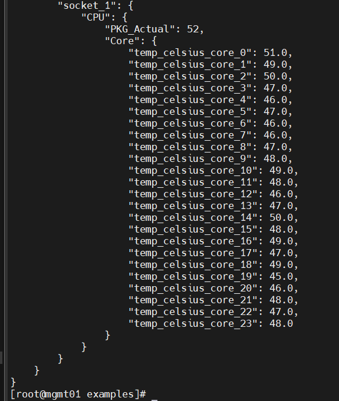

Variorum Findings
-
Building Variorum requires the hwloc and jansson libraries.
-
Users of supercomputers include scientists, software engineers, and system admins with varying levels of familiarity with hardware details.
-
Accessing and managing power and performance settings on supercomputers can be difficult due to complex and vendor-specific controls.
-
Variorum provides a unified, easy-to-use interface that simplifies access to these dials.
-
Users can manage power, energy, frequency, temperature, and performance counters across different systems without needing detailed knowledge of each vendor's specific hardware.
-
Variorum provides temperature monitoring and power capping interfaces regardless of the vendor platform, and it can be integrated with higher-level system software.
-
It is implemented in C with function pointers to specific target architectures.
How Variorum Works ??
Variorum simplifies power and performance management across different hardware vendors by utilizing the specific controls and features each vendor provides. Different vendors offer various ways to monitor and adjust parameters like power, temperature, and performance, and these controls can vary even within the same vendor across different generations of processors.
Variorum uses these vendor-specific mechanisms to manage performance and energy efficiency, relying on features like Dynamic Voltage and Frequency Scaling (DVFS) and power capping to dynamically adjust how processors use energy.
This power management started in mobile devices but evolved to include more sophisticated techniques, like Intel's Nehalem and Sandy Bridge processors, which introduced more precise control over core speed and power consumption. In modern systems, users can set power limits, and the processor automatically adjusts to stay within those limits while maintaining performance.
In short, Variorum helps standardize access to vendor-specific power and performance controls, allowing better management of energy use and efficiency in processors, especially in large-scale computing environments.
Variorum: Key Points
-
Vendor-neutral: Works with different hardware architectures and doesn’t require users to learn vendor-specific details.
-
User-friendly: Variorum's API provides a portable way for users to access dials that measure and control hardware.
-
Extensible: Variorum can adapt to new performance features in an HPC system and deprecate old features.
-
Exascale support: Variorum supports exascale supercomputers.
Useful Variorum Functions
- variorum_print_verbose_power: Provides detailed power information.
- variorum_print_verbose_thermals: Provides detailed thermal information.
- variorum_print_verbose_frequency: Provides detailed frequency information.
- variorum_print_topology: Displays system topology information.
- variorum_print_verbose_gpu_utilization: Displays GPU utilization details.
For more information, visit the API documentation.
Running Variorum Functions
Step 1: Navigate to the Example Directory
First, go to the directory where Variorum is installed. Then navigate to the examples directory.
[cadmin@mgmt01] : /home/cadmin/variorum_demo/variorum/src/examples
( Inside the examples directory, you will find several example programs that demonstrate the usage of Variorum functions.)

Step 2: Compile the Example Programs
The next step is to compile the example programs to generate the executable files. It's important to compile the programs with root access, as Variorum requires access to the Model-Specific Register (MSR) files to gather data, and only the root user has permission to access these files.
To compile an example program, use the following command:
**gcc -o variorum-get-thermals-json-example variorum-get-thermals-json-example.c \ -I/home/cadmin/variorum_demo/variorum/install/include \ -L/home/cadmin/variorum_demo/variorum/install/lib -lvariorum **
Explanation of the Command: gcc: This is the GNU Compiler Collection, used to compile C programs.
-o variorum-get-thermals-json-example: This option specifies the name of the output executable file.(variorum-get-thermals-json-example).
variorum-get-thermals-json-example.c: This is the name of the C source file that you're compiling.
-I/home/cadmin/variorum_demo/variorum/install/include: This flag tells the compiler where to find the header files for Variorum.
-L/home/cadmin/variorum_demo/variorum/install/lib: This flag tells the compiler where to find the library files for Variorum.
-lvariorum: This links the libvariorum library to the compiled program.
Step 3: Set the Library Path
Before running the compiled executable, you need to set the LD_LIBRARY_PATH environment variable to include the directory where the Variorum library is installed. This ensures that the system can locate the necessary library files when the program is executed.
Run the following command to export the library path:
export LD_LIBRARY_PATH=/home/cadmin/variorum_demo/variorum/install/lib:$LD_LIBRARY_PATH
Why This is Needed: The LD_LIBRARY_PATH environment variable is used by the dynamic linker to locate shared libraries at runtime. By adding the Variorum library path to this variable, you ensure that the system can find and load the Variorum libraries needed by the executable.
Step 4: Run the Executable
Once you've compiled the program and set the LD_LIBRARY_PATH, you can run the executable as follows:
./variorum-get-thermals-json-example
